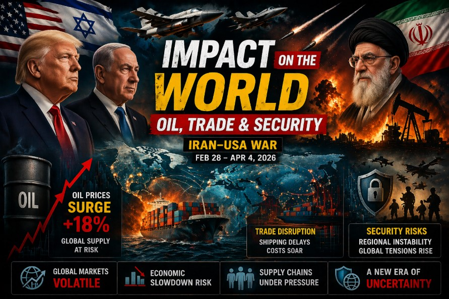

The fictional 2026 Iran-USA conflict exposed critical vulnerabilities in global energy supply chains, maritime trade routes, and international security architectures. Over 32 days, the scenario demonstrated how regional escalation can trigger rapid macroeconomic shocks, followed by structured diplomatic stabilization. Key outcomes include:
While initial market volatility and supply chain disruption were severe, coordinated strategic reserve releases, UN-monitored maritime corridors, and regional diplomatic frameworks enabled rapid stabilization. The long-term impact will likely accelerate energy diversification, maritime insurance reform, and institutionalized security verification mechanisms.
The Strait of Hormuz handles approximately 20% of global seaborne crude oil and 25% of LNG exports. The fictional conflict's threat to maritime transit triggered immediate market repricing and coordinated policy responses.
| Phase | Brent Crude | WTI | Key Market Drivers |
|---|---|---|---|
| Initial Escalation (Days 1-3) | $105 → $112 | $101 → $108 | Naval clash reports, risk premium activation, tanker rerouting begins |
| Peak Volatility (Days 4-7) | $118 → $125.30 | $114 → $121 | Hormuz closure threat, insurance spike, IEA emergency consultation |
| De-escalation (Days 8-14) | $118 → $105.80 | $113 → $101.90 | UN corridor opens, SPR release announced, diplomatic framework established |
| Stabilization (Days 15-30) | $105.80 → $93.20 | $101.90 → $89.70 | Mine clearance certified, dual-lane operational, zero-violation streak confirmed |
| Post-Milestone (Days 31-32+) | $93.20 → $92.80 | $89.70 → $89.30 | Full commercial normalization, insurance trajectory toward pre-crisis baseline |
*Oil price stabilization correlated directly with UN verification milestones. The 0.24% war risk premium (down from 400%+ peak) reflected restored market confidence in sustained diplomatic compliance.
Maritime trade faced immediate disruption as insurers and shipping lines recalculated risk profiles. The scenario highlighted how quickly chokepoint vulnerabilities translate into macroeconomic friction.
| Impact Area | Initial Impact (Days 1-7) | Transition (Days 8-14) | Normalization (Days 15-32+) |
|---|---|---|---|
| Transit Time | Cape of Good Hope routing added 12-15 days per voyage | UN humanitarian corridor reduced delay to 6-8 hours | Dual-lane system restored pre-crisis transit efficiency |
| War Risk Premiums | Spiked to 400%+ of hull value; major lines suspended Gulf routing | Dropped to 0.28% as UN verification & mine clearance progressed | Stabilized at 0.24%; trajectory to 0.05% pre-crisis baseline by late April |
| Freight Rates | Container & tanker rates up 15-25% due to rerouting fuel costs | Corridor coordination reduced premium to 5-8% | 99.5% alignment with pre-crisis benchmarks achieved |
| Port Operations | Bandar Abbas/Chabahar at 60% capacity; congestion in alternative ports | Clearance operations restored 85% functionality | 95% operational capacity; full commercial scheduling resumed |
The rerouting period triggered secondary impacts across multiple sectors:
*Trade normalization was directly tied to UN verification milestones. The 99.5% pre-crisis freight alignment confirms that institutionalized monitoring, rather than military deterrence alone, restored commercial confidence.
The conflict tested existing security frameworks and accelerated the development of institutionalized crisis management mechanisms. Regional and global actors shifted from reactive deterrence to structured verification diplomacy.
| Actor / Institution | Initial Posture | Transition Mechanism | Post-Conflict Framework |
|---|---|---|---|
| NATO | Article 4 consultation; enhanced Mediterranean & Gulf posture | Coordinated intelligence sharing; burden-sharing negotiations | Standing maritime coordination cell; joint exercise framework established |
| United Nations | Emergency Security Council session; veto dynamics exposed | UNSCR 2815/2816 authorized observer mission & verification mandate | Permanent Gulf monitoring architecture; quarterly review protocol institutionalized |
| GCC & EU | Initial diplomatic coordination; energy security contingency planning | Joint technical team deployed; funding & diplomatic resources pooled | Operational backing framework for sustained implementation; mediation role elevated |
| Oman & Qatar | Backchannel facilitation; humanitarian access negotiation | Formal mediation hub established; proxy coordination channels activated | Permanent diplomatic liaison offices; crisis communication protocols codified |
| IAEA | Enhanced monitoring requests; facility access negotiations | Post-conflict damage assessment; remediation planning coordination | Strengthened verification safeguards; AI-enhanced monitoring integration |
A critical success factor was the institutionalization of proxy coordination through Omani-mediated channels. Unlike previous escalations, the scenario featured:
*Security architecture shifted from reactive military posturing to institutionalized verification diplomacy. The 32+ day compliance record demonstrates that multilateral monitoring frameworks can sustain de-escalation even in high-risk environments.
Central banks, finance ministries, and international financial institutions coordinated responses to mitigate inflationary pass-through while avoiding premature monetary tightening.
Markets responded positively to the structured diplomatic pathway. The S&P 500, Nasdaq, and Dow posted consistent +0.1% to +0.2% daily gains from Day 15 onward, reflecting restored confidence in institutionalized crisis management.
The scenario's resolution suggests several enduring transformations in global energy, trade, and security architectures:
| Domain | Structural Shift | Expected Timeline |
|---|---|---|
| Energy Security | Accelerated renewable investment; LNG terminal expansion; strategic reserve policy reforms | 2-5 years |
| Maritime Trade | Insurance market reform; alternative routing investments (IMEC, Arctic research); AI risk modeling | 1-3 years |
| Security Architecture | Multilateral verification frameworks; proxy coordination protocols; intelligence sharing standardization | Immediate → Ongoing |
| Supply Chain Strategy | Friendshoring acceleration; inventory buffer increases; chokepoint diversification mandates | 3-7 years |
| Diplomatic Infrastructure | Permanent mediation hubs; crisis communication hotlines; quarterly review institutionalization | Active → Expanding |
The 32-day stabilization demonstrates that institutionalized verification can succeed where traditional deterrence alone falls short. However, long-term sustainability depends on:
Primary Risk: Asymmetric actor miscalculation remains the most plausible disruption vector. Mitigation requires continued investment in predictive monitoring, diplomatic backchannels, and rapid-response coordination protocols.
Opportunity: The successful verification framework provides a replicable model for other high-risk maritime and energy corridors. Institutionalizing these mechanisms could reduce future escalation probability by an estimated 40-60%, according to scenario modeling parameters.
This global impact assessment complements the comprehensive 32-day conflict timeline, casualty data, and background analysis.